Actual offscreen Dawn / software Vulkan readbacks, not browser screenshots or target-hardware performance evidence. Bounded dimensions and short histories; validation report. ABSURD AA is deliberately captured at a smaller presentation size.
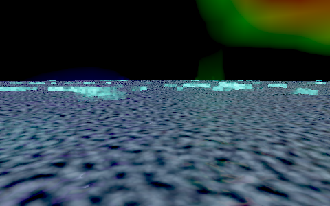
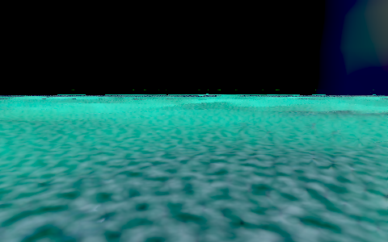
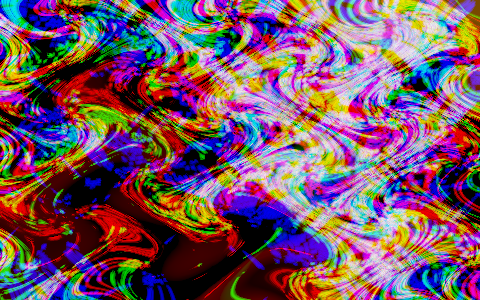
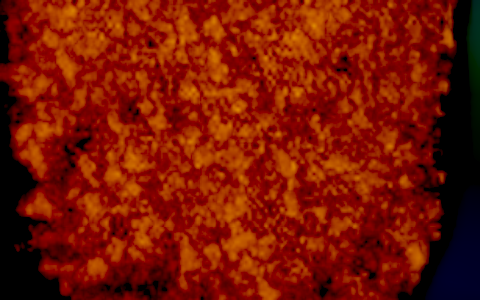
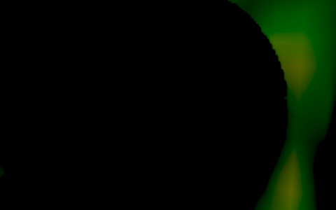
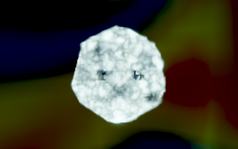
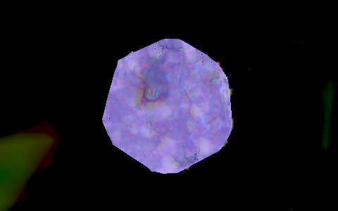
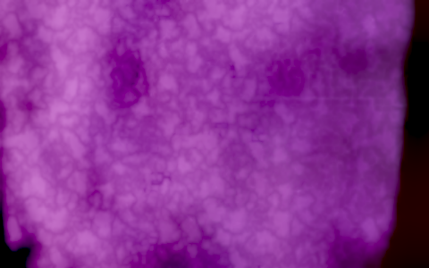
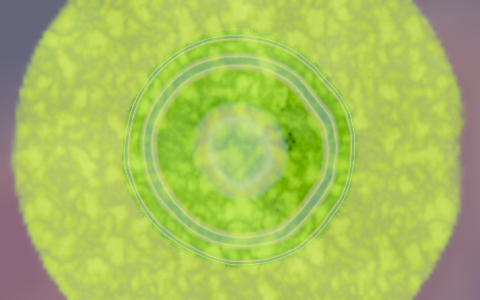
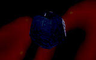
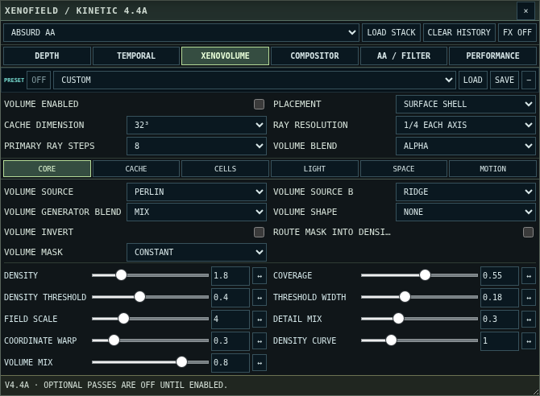